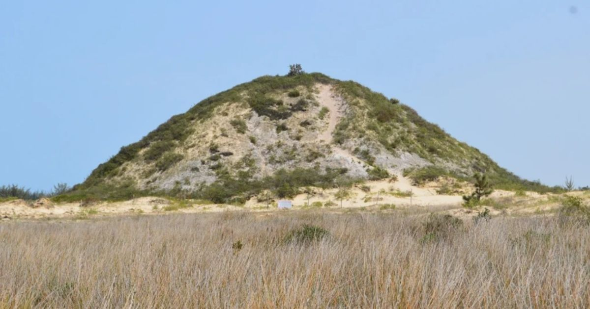

Povos originários e ocupação do território · Acontecimento 01 de 08
Formação dos Sambaquis
Contexto abordado: cerca de 7,5 mil a mil anos atrás, com variações regionais.

O que são os sambaquis
A palavra vem do tupi e significa, literalmente, “monte de conchas”. Sambaquis são sítios arqueológicos em forma de montículo encontrados ao longo da costa brasileira, em diferentes ambientes, como zonas de águas salobras, manguezais e florestas, junto a lagunas, baías, estuários e ilhas costeiras. No Sul do país, alguns podem chegar a 70 metros de altura e 500 metros de largura. [1]
Durante muito tempo, foram interpretados como simples depósitos de restos de alimentação. A leitura apresentada nas pesquisas citadas é diferente: são estruturas construídas intencionalmente e carregadas de significado simbólico. Camadas claras de conchas alternam-se com camadas escuras, com carvão, espinhas de peixe queimadas e ferramentas; também há numerosos sepultamentos. Por isso, os grandes sambaquis são compreendidos como estruturas funerárias coletivas. [1]
Quem eram seus construtores
Seus construtores são chamados de sambaquieiros. O termo não designa um único povo, mas uma tradição cultural presente em trechos da costa. Semelhanças entre artefatos de osso e pedra do litoral Sul e Sudeste sustentam a hipótese de uma origem comum. Os autores também propõem que essa cultura seja mais antiga que os sítios conhecidos e possa estar relacionada a migrações costeiras do fim do Pleistoceno; trata-se de uma hipótese, não de um fato estabelecido. [1]
Os sambaquieiros não eram ancestrais diretos de todos os povos indígenas encontrados pelos europeus. Em sítios tardios há cerâmicas relacionadas a sociedades de língua Jê, conhecidas pela etnografia e que ocuparam grande parte do litoral Sul. [1]
Cotidiano e organização social
Alimentação e técnicas
Estudos de isótopos indicam uma dieta baseada na pesca e na caça de espécies de nível trófico alto. Embora abundantes, os moluscos não parecem ter sido o alimento principal: eram usados sobretudo como material de construção e em rituais funerários. A pesca era feita com anzóis e redes, e os grupos também usavam canoas. [1]
Também caçavam animais terrestres, como antas, porcos-do-mato e macacos; dentes e ossos desses animais eram transformados em adornos. Resíduos encontrados em cálculo dentário indicam consumo de vegetais como batata-doce, cará, palmeiras e milho, e há evidências crescentes de manejo e horticultura. [1]
Um estudo de 2026 sobre sambaquis da Baía da Babitonga analisou centenas de ossos de cetáceos e ferramentas ósseas guardados no Museu Arqueológico de Sambaqui de Joinville. Os resultados sugerem que esses grupos caçavam grandes baleias, em vez de apenas aproveitarem animais encalhados. [9] [10] [11]
Moradia
As áreas de habitação dos sambaquieiros ainda não foram identificadas com certeza. Uma possibilidade é que ficassem em terraços arenosos próximos aos montes e que os vestígios tenham sido remobilizados para dentro deles. Assim, há mais informações sobre os rituais funerários do que sobre os locais de moradia.
Rituais
Os mortos eram depositados com cuidado, acompanhados de adornos, ferramentas e oferendas de alimento. Camadas de carvão, peixe e conchas queimadas sobre os sepultamentos são interpretadas como possíveis restos de banquetes em honra aos mortos. [1]
Também foram encontrados zoólitos, esculturas de pedra em forma de animais. Cerca de trezentas peças são conhecidas, sem registros ao norte do Trópico de Capricórnio. Elas são associadas a uma religião de natureza animista. [1]
Organização social
A organização social é tema de debate científico. Um modelo proposto por DeBlasis, Gaspar e Kneip para o Sul de Santa Catarina descreve comunidades estáveis e integradas em torno da laguna, com sinais de uma sociedade bastante igualitária e de compartilhamento cooperativo dos recursos costeiros. Nesse modelo, o culto aos ancestrais conectava as comunidades. [1]
Alguns sepultamentos mais ricos, com zoólitos, podem indicar a presença de lideranças religiosas, mas não há evidência de poder político estável em escala regional. Os autores observam poucos indícios de morte violenta entre os sepultados e reconhecem lacunas no modelo. A hipótese de que montes gêmeos representassem uma divisão social em metades, por exemplo, ainda precisa ser demonstrada. [1]
Onde e quando: sambaquis em Santa Catarina
Santa Catarina reúne alguns dos maiores e mais estudados sambaquis do Brasil. As características e cronologias variam entre as regiões:
- Litoral sul — Laguna, Jaguaruna e Tubarão: na área de Santa Marta foram registrados mais de 120 sambaquis e quase 300 datações por radiocarbono. A ocupação começa há cerca de 7,5 mil anos, expande-se até aproximadamente 3 mil anos atrás e depois diminui, embora haja sítios ativos há cerca de mil anos. Cabeçuda e Jabuticabeira II foram construídos continuamente por mais de dois mil anos. Laguna tem 22 sambaquis registrados no Cadastro Nacional de Sítios Arqueológicos. [1] [4]
- Ilha de Santa Catarina: entre os sítios escavados está Armação do Sul, em Florianópolis, onde foram registrados 86 sepultamentos.
- Litoral norte — Baía da Babitonga: a baía tem mais de 170 sítios arqueológicos pré-coloniais, com predominância de sambaquis. Um estudo estima cerca de 150 sambaquis na região, dos quais 42 em Joinville. Esse patrimônio também está ligado ao acervo do Museu Arqueológico de Sambaqui de Joinville. [6] [9]
O que mudou: o fim da tradição sambaquieira
O que aconteceu com os sambaquieiros ainda é objeto de pesquisa, sem uma resposta única. Para o Sul catarinense, as fontes citadas descrevem mudanças entre cerca de 2.100 e 1.800 anos atrás: camadas de conchas dão lugar a sedimentos escuros, ricos em restos de peixe e carvão, enquanto os rituais funerários continuam associados à construção dos montes. [1]
Por volta de 1.700 anos atrás surgem pequenos sítios de terra escura com cremações, uma prática que não havia sido identificada nos montes anteriores. A cerâmica aparece há cerca de 1.200 anos. Esses sítios tardios também apresentam mais evidências de violência e mudanças nas regras de residência após o casamento. [1]
Na interpretação dos autores, a estabilidade de longa duração mudou significativamente com a chegada de sociedades ceramistas e cultivadoras de plantas, de língua Jê e Tupi, a partir de cerca de 1,5 mil anos atrás. Essa é a interpretação de um grupo de pesquisadores, não um consenso. As fontes citadas não permitem afirmar como ocorreu o contato entre esses povos, nem concluir que houve extermínio ou simples substituição cultural. [1]
O que permaneceu: patrimônio e preservação
Entre os vestígios estão os próprios montes, esqueletos, adornos, ferramentas e zoólitos preservados em museus. Como muitos sítios originais desapareceram, as coleções do Museu Arqueológico de Sambaqui de Joinville também preservam registros que, de outra forma, poderiam ter sido perdidos. [6]
Proteção legal
A Constituição de 1988 reconhece o patrimônio arqueológico como parte do patrimônio cultural brasileiro e atribui ao Poder Público o dever de protegê-lo, com colaboração da comunidade. A Lei nº 3.924, de 26 de julho de 1961, dispõe sobre monumentos arqueológicos e pré-históricos. [2] [3]
Um estudo sobre Laguna relata que a lei buscou reduzir a depredação de sítios, especialmente sambaquis, então visados pela indústria de cal e por prefeituras. O Iphan mantém o Cadastro Nacional de Sítios Arqueológicos; o patrimônio arqueológico também é considerado em avaliações de impacto do licenciamento ambiental, e o órgão utiliza Termos de Ajustamento de Conduta para compensar danos. [2] [4]
Ameaças atuais
A extração de conchas para produção de cal é uma ameaça antiga. Em Joinville, a exploração foi favorecida pela grande quantidade de sambaquis na baía. A existência de legislação, por si só, não garante a proteção: um artigo sobre o Sul catarinense aponta limites no alcance das medidas legais e da proteção do Iphan e propõe educação patrimonial e turismo arqueológico como complementos. Outra linha de pesquisa estuda os riscos das mudanças climáticas para os sambaquis da Baía da Babitonga. [5] [6] [8]
Respondendo às perguntas
O que estava acontecendo naquele período, e quem estava envolvido?
Entre cerca de 7,5 mil e mil anos atrás, comunidades de pescadores, caçadores e coletores, com alguma horticultura, ocuparam o litoral. Em Santa Catarina, construíram montes de conchas que serviam como cemitérios e lugares de memória. Perto do fim desse período, chegaram sociedades ceramistas de língua Jê e Tupi. [1]
Como aconteceu?
Foi um processo gradual e coletivo. Novos rituais funerários acrescentavam camadas aos montes ao longo de gerações. As mudanças posteriores também foram graduais, envolvendo alterações na composição dos montes, nas práticas funerárias e na cultura material. [1]
Onde aconteceu e que espaços foram afetados?
Em lagunas, baías e estuários, de Laguna e Jaguaruna a Florianópolis e à Baía da Babitonga. A água era central para o território, e a laguna é descrita como espaço compartilhado de pesca e convivência. [1]
O que mudou na sociedade, na economia e no território?
No modelo de DeBlasis, Gaspar e Kneip, as comunidades formavam uma rede em torno da laguna, sem um centro político. As mudanças tardias incluem cerâmica, cremação, mais sinais de violência e declínio na construção de grandes montes. O próprio modelo permanece em debate. [1]
Que marcas permaneceram?
Permaneceram os montes, os acervos de museus, a legislação de proteção e o cadastro nacional de sítios arqueológicos. [2] [3]
Qual a importância para Santa Catarina hoje?
Os sambaquis mostram que o litoral catarinense foi povoado e recebeu monumentos e práticas funerárias complexas milhares de anos antes da colonização europeia. Um trabalho apresentado na UDESC observa que, após a Constituição de 1988, o discurso oficial do patrimônio catarinense reforçou a imagem do imigrante europeu como representativa do estado. Os sambaquis ampliam essa perspectiva da história local. [12]
Fontes
- DEBLASIS, P.; GASPAR, M. D.; KNEIP, A. “Sambaquis from the Southern Brazilian Coast: Landscape Building and Enduring Heterarchical Societies throughout the Holocene”. Land, v. 10, n. 7, art. 757, 2021. Acessar artigo.
- IPHAN. Legislação do patrimônio arqueológico. Acessar página do Iphan.
- BRASIL. Lei nº 3.924, de 26 de julho de 1961. Acessar legislação.
- Estudo sobre sambaquis e turismo em Laguna (SC). Acessar estudo.
- “Turismo arqueológico, educação e os sambaquis do Complexo Lagunar Sul de SC”. Revista Memorare, Tubarão, v. 3, n. 3, 2016. Acessar artigo.
- “Estado de conservação dos sambaquis na área urbana de Joinville”. Escritas. Acessar artigo.
- “Resultados preliminares da pesquisa no sambaqui sob rocha Casa de Pedra, São Francisco do Sul (SC)”. Acessar artigo.
- “O patrimônio arqueológico pré-colonial brasileiro costeiro num cenário de mudanças climáticas: um estudo dos sambaquis da Baía Babitonga”. Fórum Patrimônio. Acessar artigo.
- ICTA-UAB. Notícia sobre o estudo de cetáceos em sambaquis da Babitonga, jan. 2026. Acessar notícia.
- Revista Pesquisa FAPESP. “Sambaquieiros também eram baleeiros”. Acessar reportagem.
- SciTechDaily. “Ancient Whale Hunters of Brazil Challenge Long-Held Scientific Assumptions”. Acessar reportagem.
- Trabalho sobre patrimônio catarinense apresentado na UDESC, Seminário de Patrimônio. Acessar trabalho.